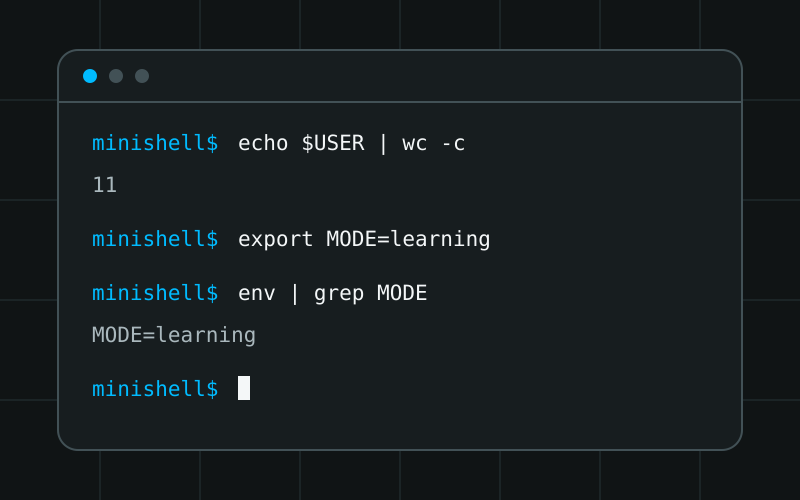

Case study / Unix systems
Building a shell from tokens to processes
Minishell is a collaborative C project that recreates a focused subset of shell behavior through parsing, process management, file descriptors, environment state, and signal handling.

Overview
A focused shell built in C
This two-person 42 project reads commands through Readline, records
command history, turns input into structured syntax, and executes
the resulting commands. It supports pipelines, input and output
redirections, append mode, heredocs, environment expansion, and the
previous command status through $?.
The project also implements seven built-ins: echo,
cd, pwd, export,
unset, env, and exit. External
programs are resolved from the environment and launched through
Unix process APIs.
Problem and goals
Coordinate language rules with operating-system behavior
A shell has to interpret text and manage processes at the same time. Quote handling, variable expansion, redirections, and pipes all influence what should execute and which file descriptors each process should receive.
- Separate lexical analysis, syntax analysis, and execution.
- Represent command relationships before starting processes.
- Connect pipeline stages without leaking unused descriptors.
- Keep environment-changing built-ins in the parent shell.
- Restore an interactive prompt after signals and command errors.
- Release transient tokens, syntax nodes, strings, and heredocs.
Implementation
A staged route from text to execution
Tokenize while preserving quote context
The lexical-analysis modules split input into words and operators while retaining quote information. Keeping this context allows a later expansion stage to distinguish literal text from values that should be expanded.
Build an abstract syntax tree
Syntax analysis validates the token sequence and creates nodes for commands, pipes, input, output, append, and heredoc redirections. Left and right child pointers represent how pipeline stages relate instead of making execution depend on the original text.
Expand environment values after parsing
The environment is stored as a linked list. Expansion resolves
named variables and $?, which carries the previous
command's status, while quote data controls where expansion applies.
Execute pipelines through Unix primitives
External commands use fork, execve, and
waitpid. Pipeline nodes create descriptors with
pipe, connect standard input and output with
dup2, and close descriptors that each process no longer
needs.
Preserve shell state for built-ins
A standalone built-in runs in the parent process so commands such as
cd, export, and unset can change
the continuing shell state. Commands inside pipelines execute in
child-process paths where their changes should not affect the parent.
Use different signal behavior for different modes
The interactive parent, child commands, and heredoc input install different signal behavior. This reflects that Ctrl+C at a prompt is not the same event as interrupting a running command or a heredoc.
Reliability and scope
Define the supported shell clearly
The code checks syntax before building the final execution tree and routes cleanup through dedicated token, AST, heredoc, environment, and descriptor helpers. Redirection logic preserves and restores standard descriptors around parent-process built-ins.
This is intentionally a learning shell, not a complete Bash or POSIX implementation. Logical operators, wildcard expansion, subshells, and job control are outside its implemented scope. Naming those limits is more accurate than presenting a subset as a full replacement.
Testing
Check architecture, behavior, and portability
The repository builds with -Wall -Wextra -Werror and
links against Readline. Testing a shell also requires focused cases
for quoting, expansion, pipelines, redirection order, built-ins,
exit statuses, heredoc interruption, and signals.
- Trace representative input from tokens through the AST.
- Compare simple command and pipeline output with Bash behavior.
- Verify parent-state changes for environment built-ins.
- Exercise missing commands, invalid syntax, and failed files.
- Interrupt the prompt, child processes, and heredocs separately.
- Inspect cleanup paths after both successful and failed commands.
A current macOS compile check found a Readline API compatibility
difference: the available headers expose clear_history
while this source calls rl_clear_history. Therefore this
case study does not claim that the current checkout is portable
across every Readline environment without adjustment.
Outcome
What the project made concrete
Minishell connected data structures and parsing decisions directly to observable operating-system behavior. A token type can determine an AST shape, and that shape can determine which processes and file descriptors exist at runtime.
- Parsing first makes complex execution paths easier to reason about.
- File-descriptor ownership must be explicit in every process.
- Parent and child execution have different state responsibilities.
- Signals are application state, not only isolated callbacks.
- Shared interfaces matter when two developers own connected stages.
- Portability needs to be tested against actual system libraries.
Technology